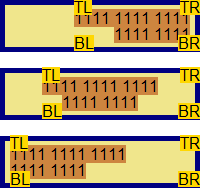
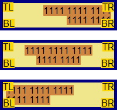

根据 W3C CSS2.1 规范，定位的元素（'position' 特性的值不为 'static'）可以通过 'top'、'right'、'bottom'、'left' 特性设定其相对其包含块（containing block）的偏移位置。
绝对定位元素（position:absolute）的包含块由其最近的一个 'position' 不为 'static' 的祖先元素创建。当这个祖先元素不是行内级别时，包含块由其 padding edge 组成。
关于 'top'、'right'、'bottom'、'left' 特性及包含块的计算 的详细信息，请参考 CSS2.1 规范 9.3.2 Box offsets 及 10.1 Definition of "containing block" 中的内容。
在 IE6 IE7(Q) IE8(Q) 下，若包含块没有触发 hasLayout 特性，则其内参照其定位的绝对定位元素的偏移位置计算会出现问题。
此问题会导致绝对定位元素的位置在各浏览器中产生差异。
| IE6 IE7(Q) IE8(Q) |
|---|
W3C 规范中说明了如果绝对定位元素的包含块是由非行内祖先元素生成的，则包含块由这个祖先元素的 'padding edge' 即边白边组成。 换句话说，绝对定位元素应该参照这个祖先元素 padding 和 border 之间的那个分界线所形成的矩形。
分析以下代码：
<body style="margin:20px; font:16px/1 Arial;"> <div style="width:200px; background:wheat;">
<div id="d" style="position:relative; text-align:right; background:khaki; border:5px solid navy;
padding:5px;"> <span style="background:peru;">1111 1111 1111<br />1111 1111</span>
<span style="position:absolute; left:0px; top:0px; background:gold;">TL</span> <span
style="position:absolute; right:0px; top:0px; background:gold;">TR</span> <span
style="position:absolute; left:0px; bottom:0px; background:gold;">BL</span> <span
style="position:absolute; right:0px; bottom:0px; background:gold;">BR</span> </div>
</div> <br /> <div style="width:200px; background:wheat;"> <div id="d"
style="position:relative; text-align:center; background:khaki; border:5px solid navy; padding:5px;">
<span style="background:peru;">1111 1111 1111<br />1111 1111</span> <span
style="position:absolute; left:0px; top:0px; background:gold;">TL</span> <span
style="position:absolute; right:0px; top:0px; background:gold;">TR</span> <span
style="position:absolute; left:0px; bottom:0px; background:gold;">BL</span> <span
style="position:absolute; right:0px; bottom:0px; background:gold;">BR</span> </div>
</div> <br /> <div style="width:200px; background:wheat;"> <div id="d"
style="position:relative; text-align:left; background:khaki; border:5px solid navy; padding:5px;">
<span style="background:peru;">1111 1111 1111<br />1111 1111</span> <span
style="position:absolute; left:0px; top:0px; background:gold;">TL</span> <span
style="position:absolute; right:0px; top:0px; background:gold;">TR</span> <span
style="position:absolute; left:0px; bottom:0px; background:gold;">BL</span> <span
style="position:absolute; right:0px; bottom:0px; background:gold;">BR</span> </div>
</div> </body>
上面代码分为三组，区别为每组中的【d】的 'text-align' 特性的值不同，分别为居右、居中、居左。
每组中均包含一个普通流中的 SPAN 元素；4 个绝对定位元素，他们的 'top'、'right'、'bottom'、'left' 特性设置可以描绘出它们包含块的范围。
需要注意的是，【d】在 IE 中均没有触发 hasLayout 特性。
| IE6 IE7(Q) IE8(Q) | IE7(S) IE8(S) Firefox Chrome Safari Opera |
|---|---|
|  |  |
可以看到在 IE6 IE7(Q) IE8(Q) 中，水平方向对包含块的宽度计算有误，【d】中那个普通流中的 SPAN
元素的文字位置对包含块造成了影响，导致绝对定位元素定位错误；另外垂直方向对包含块的高度计算也有误，直接将【d】的 border edge 作为了包含块的垂直高度。
而在 其他浏览器 中包含块的计算则完全遵照 W3C 规范中的描述。
使包含块触发 hasLayout 特性。如 'zoom:1' 或者设置明确的宽度、高度。
| 操作系统版本: | Windows 7 Ultimate build 7600 |
|---|---|
| 浏览器版本: |
IE6
IE7 IE8 Firefox 3.6.8 Chrome 6.0.472.11 dev Safari 5.0.1 Opera 10.60 |
| 测试页面: | absolute_align.html |
| 本文更新时间: | 2010-07-30 |
absolute offsetParent 包含块 绝对定位 对齐 containing block text-align